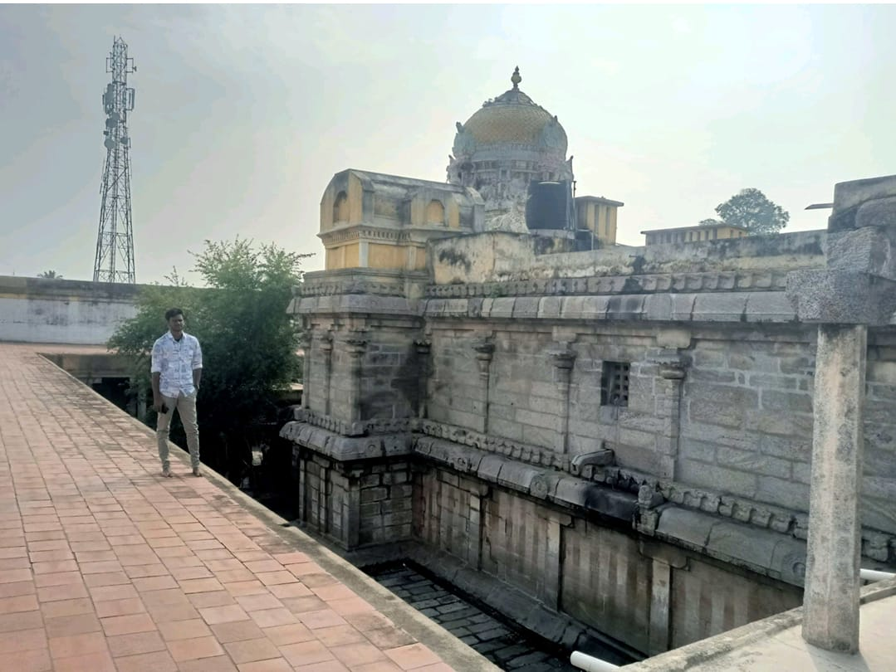

The Arthanareeswarar Temple is located in Elavanasur Kottai, which is in the state of Tamil Nadu, India. It's dedicated to Lord Shiva and Parvati in their half-male, half-female form, representing the union of masculine and feminine energies.
This temple holds cultural and religious significance for devotees and tourists alike.
The Arthanareeswarar Temple is believed to have been built during the Chola period, showcasing magnificent Dravidian architecture. It's revered as one of the Pancha Bhoota Stalas, representing the element of fire.
The temple attracts pilgrims and visitors for its architectural beauty, spiritual ambiance, and the unique depiction of Lord Shiva as Ardhanarishvara. It's also known for its religious festivals and rituals, which draw devotees from far and wide to experience the divine presence.